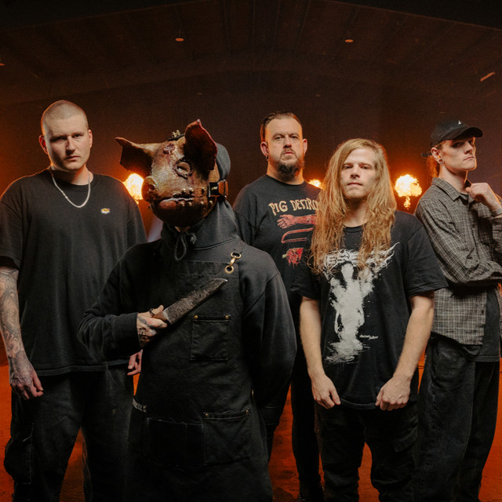

Violence is embodied into the brutal guitar tones, anger runs through every single strike of the drum and demons scream in place of the lead vocalist.
The brimstone rises from the ground, as the band members arise from the ground...
To The Grave blends a myriad of metal subgenres together, drawing vocal styles from death metal, slam metal, metalcore and deathcore with his own twist on top, making their sound purely unique from any other band.
Their music is available on Spotify, Youtube, Amazon, Bandcamp, Apple Music and have viynls and t-shirts that are available for purchase, but unfortunately the tour dates have just passed and it'll likely be a sizebale amount of time before they tour again.
go back!